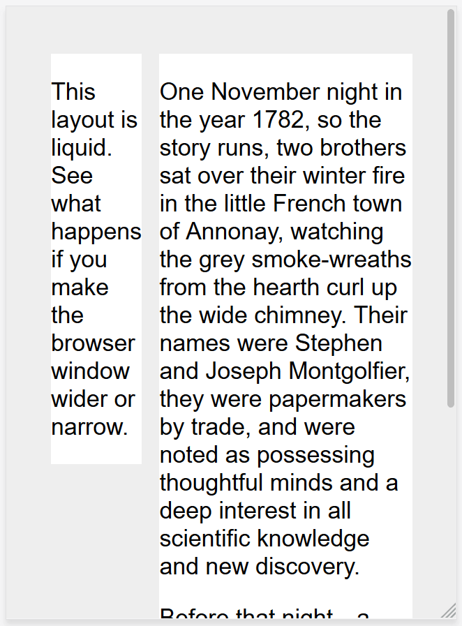
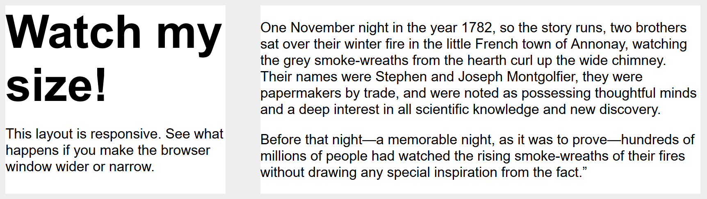

На заре веб-дизайна страницы создавались для экрана определённого размера. Если у пользователя был экран большего или меньшего размера чем ожидал дизайнер, то результат мог быть от нежелательных полос прокрутки, до слишком длинной строки и плохого использования пространства. Поскольку становились доступны много различных размеров экранов, появилась концепция отзывчивого (адаптивного) веб-дизайна (responsive web design (RWD)) — набор методов, которые позволяют веб-страницам менять свой макет и внешний вид в соответствии с разной шириной экрана, разрешением и т.д. Это та самая, идея которая изменила подход к дизайну веба для множества устройств, и в этой статье мы поможем вам понять основные методы, которые вам необходимо знать, чтобы освоить его.
Исторические макеты сайтов
В какой-то момент истории при разработке веб-сайта у вас было два варианта:
- Вы могли создать жидкий сайт, который будет растягиваться чтобы заполнить окно браузера
- или сайт с фиксированной шириной, который будет иметь фиксированный размер в пикселях.
Эти два подхода, как правило, приводили к тому, что веб-сайт лучше всего выглядел на экране человека, создавшего сайт! Жидкий сайт приводил к раздавленному дизайну на маленьких экранах (как видно ниже) и не читаемо длинным строкам на больших.

Примечание: Посмотрите этот простой жидкий макет: пример, исходный код. При просмотре примера, растягивайте и сжимайте окно браузера чтобы увидеть, как это выглядит при разных размерах.
Сайт с фиксированной шириной рисковал иметь горизонтальную полосу прокрутки на экранах меньших чем ширина сайта (как видно ниже) и много белого пространства на краях дизайна на больших экранах.
Примечание: Посмотрите этот простой макет с фиксированной шириной: пример, исходный код. Снова изучите результат по мере изменения размера окна браузера.
Примечание: Скриншоты выше сделаны используя Responsive Design Mode в Firefox DevTools.
Когда мобильный веб стал становиться реальностью с первыми функциональными телефонами, компании желающие охватить мобильники начали создавать в основном специальные мобильные версии своих сайтов, с различными URL (часто что-то наподобие m.example.com или example.mobi). Это означало, что необходимо было разрабатывать и поддерживать в актуальном состоянии две отдельные версии сайта.
Кроме того, эти мобильные сайты часто предлагали очень урезанный вариант. Поскольку мобильные гаджеты стали мощнее и способными отображать целые веб-сайты, пользователей мобильных устройств раздражало, что они обнаруживали себя запертыми в мобильной версии сайта, неспособные получить доступ к информации, которая, как они знали, есть в полнофункциональной версии сайта.
Гибкий макет до отзывчивого дизайна
Было разработано несколько подходов чтобы попытаться разрешить недостатки построения веб-сайтов жидким методом или методом с фиксированной шириной. В 2004 году Камерон Адамс написал пост Resolution dependent layout, описывающий метод создания дизайна который мог бы адаптироваться к разным разрешениям экрана. Этот подход требовал, чтобы JavaScript узнавал разрешение экрана и загружал корректный CSS.
Зои Миккели Гилленвотер сыграла важную роль в свой работе описав и формализовав различные способы посредствам которых могут быть созданы гибкие сайты, пытаясь найти золотую середину между заполнением экрана или полностью фиксированным размером.
Отзывчивый дизайн
Термин адаптивный дизайн был Придуман Итаном Маркоттом в 2010 году и описывал использование трёх методов в сочетании.
- Первой была идея жидких сеток, нечто что уже исследовала Гилленвотер, что можно прочитать в статье Маркотта - Fluid Grids (опубликовано в 2009 в A List Apart).
- Вторым методом была идея жидких изображений. Используя очень простой метод
настройки свойства
max-widthна100%, изображения будут становиться меньше если содержащий столбец становится уже чем изначальный размер изображения, но никогда не становится больше. Это позволяет изображению уменьшаться чтобы соответствовать столбцу гибких размеров, а не перекрываться с ним, но не расти и становиться пиксельным если столбец становится шире изображения. - Третьим ключевым компонентом были медиавыражения. Медиавыражения позволяют переключать тип макета применяя только CSS то, что Камерон Адамс исследовал, используя JavaScript. Вместо того чтобы иметь один макет для всех размеров экранов, макет мог изменяться. Боковые панели можно перемещать для маленьких экранов, либо отображать альтернативную навигацию.
Очень важно понять, что адаптивный веб-дизайн — это не отдельная технология, это термин используемый, чтобы описать подход к веб-дизайну или набор лучших практик, используемых для создания макета, который может реагировать на используемое устройство для просмотра контента. В первоначальном исследовании Маркотта это означало гибкие сетки (с использованием floats) и медиавыражения, однако почти за 10 лет, прошедших с момента написания этой статьи, адаптивная работа стала стандартом по умолчанию. Современные методы макета CSS отзывчивы по своей сути, и у нас есть новые штучки, встроенные в веб-платформу для того, чтобы делать дизайн отзывчивых сайтов проще.
Остальная часть этой статьи укажет вам на различные функции веб-платформы, которые вы, возможно, захотите использовать при создании адаптивного сайта.
Медиавыражения
Отзывчивый дизайн появился благодаря медиавыражениям (media queries). Спецификация Media Queries Level 3 стала Рекомендованным Кандидатом в 2009 году, что означает, что она была признана готовой к реализации в браузерах. Медиавыражения позволяют нам проводить серию тестов (например, является ли экран пользователя больше, чем определённая ширина или разрешение) и выборочно применять CSS к стилю страницы соответственно с нуждами пользователя.
Например, следующее медиавыражение проверяет отображается ли текущая страница как экранная медиа
(а не как печатный документ) и имеет ли область просмотра ширину как минимум 800 px. CSS будет
применяться к селектору .container только если эти две вещи истины.
@media screen and (min-width: 800px) {
.container {
margin: 1em 2em;
}
}
Вы можете добавлять несколько медиавыражений в пределах одной таблицы стилей, подстраивая весь ваш макет или его части так, чтобы наилучшим образом соответствовать разным размерам экрана. Точки, в которых применяются медиавыражения и меняется макет, известны как контрольные точки.
Общим подходом при использовании медиавыражений является создание простого одноколоночного макета для устройств с узкими экранами (например, мобильные телефоны), затем проверка для больших экранов и применение макета с несколькими столбцам, когда вы знаете, что у вас достаточно ширины экрана, чтобы уместить все. Такой подход часто называют mobile first дизайном.
Узнать больше о медиавыражениях можно в документации MDN.
Гибкие сетки
Отзывчивые сайты не просто меняют свой макет между контрольными точками, они построены на гибких сетках. Гибкая сетка подразумевает что вам не надо заботиться о каждом возможном существующем размере устройства и строить для них идеальный макет в пикселях. Такой подход был бы невозможен имея широкое множество существующих устройств разных размеров, как и факт того, что даже на ПК люди не всегда используют браузер с развёрнутым до максимума окном.
Используя гибкую сетку, вам всего лишь надо добавить контрольную точку и изменить дизайн в точке, когда ваш контент начинает выглядеть плохо. Например, если длина строки становится нечитаемо длинной при увеличении размера экрана, или блок становится сдавленным с двумя словами в каждой строке при сужении экрана.
В первые дни отзывчивого дизайна, нашим единственным вариантом выполнения было использование floats. Гибкий обтекаемый макет достигался путём присвоения каждому элементу процентной ширины удостоверившись, что итоговые значения в макете не превышают 100%. В своей оригинальной статье о плавучих сетках Маркотт подробно описал формулу для преобразования макета, созданного с использованием пикселей, в проценты.
target / context = result
Например, если размер нашего целевого столбца — 60 пикселей, а контекст (или контейнер) в котором он находится — 960 пикселей, то мы делим 60 на 960 чтобы получить значение которое мы можем использовать в нашем CSS, после переноса десятичной точки вправо на 2 цифры.
.col {
width: 6.25%; /* 60 / 960 = 0.0625 */
}
Этот подход сегодня можно найти во многих местах в Интернете и он задокументирован здесь в разделе макетов в нашей статье Устаревших методов макетов (en-US). В вашей работе вероятно, что вы столкнётесь с веб-сайтами, использующими этот подход, поэтому стоит понимать его, даже если вы не будете строить современные сайты используя гибкие сетки основанные на float.
Следующий пример демонстрирует простой отзывчивый дизайн, с использованием медиавыражений и гибких сеток. На узких экранах макет отображает блоки, расположенные друг над другом:
На более широких экранах они перемещаются в два столбца:
Примечание: вы можете найти живой пример и исходный код этого примера на GitHub.
Современные технологии макетов
Современные методы макетов такие как Макет с несколькими столбцами, Flexbox, и Grid являются отзывчивыми по умолчанию. Они все предполагают, что вы пытаетесь создать гибкую сетку и дают вам более лёгкий способ сделать так.
Multicol
Самый старый из этих методов — это multicol, когда вы задаёте column-count, это
отражает то на сколько столбцов вы хотите разбить ваш контент. Далее браузер рассчитывает их
размер, размер, который изменится согласно размеру экрана.
.container {
column-count: 3;
}
Если вместо этого вы зададите column-width, то вы определите минимальную
ширину. Браузер создаст столько столбцов той ширины, сколько будет комфортно умещаться в
контейнер, а затем поделит оставшееся пространство между всеми столбцами. Поэтому число столбцов
будет меняться согласно тому сколько имеется места.
.container {
column-width: 10em;
}
Flexbox
В Flexbox, в качестве исходного поведения, flex элементы будут сжиматься и распределять
пространство между элементами в соответствии с пространством в их контейнере. Изменяя значения
flex-grow и flex-shrink вы можете указать, как вы хотите, чтобы
предметы вели себя когда они сталкиваются с большим или меньшим пространством вокруг себя.
В примере ниже каждый flex элемент будет принимать равное количество пространства во flex
контейнере используя запись flex: 1 как описано в главе Flexbox: Гибкое
изменение размеров flex элементов.
.container {
display: flex;
}
.item {
flex: 1;
}
Примечание: В качестве примера мы перестроили простой отзывчивый макет выше, в этот раз используя flexbox. Вы видите что нас больше не надо использовать странные процентные значения для подсчёта размера столбцов: пример, исходный код.
CSS grid
В макете CSS Grid единицы измерения fr позволяют распределять доступное пространство
между дорожками сетки. Следующий пример создаёт grid контейнер с тремя дорожками размером
1fr. Это создаст три вертикальные дорожки, каждая занимающая одну часть свободного
пространства в контейнере. Вы можете узнать больше об этом подходе к созданию сетки в теме
Изучение Макета Grid в разделе Гибкие grids с
единицами fr.
.container {
display: grid;
grid-template-columns: 1fr 1fr 1fr;
}
Примечание: версия grid макета ещё проще, поскольку мы можем определить столбцы в .wrapper: пример, исходный код.
Отзывчивые изображения
Самый простой подход к отзывчивым изображениям был описан в ранних статьях Маркотта по отзывчивому дизайну. По сути, вы берёте изображение максимального размера, которое могло понадобиться, и уменьшаете его. Этот подход до сих пор используется и в большинстве таблиц стилей вы найдёте следующий CSS:
img {
max-width: 100%;
}
Существуют очевидные недостатки к этому подходу. Изображение может быть изображено намного меньше своего исходного размера, что является пустой тратой пропускной способности — пользователь мобильных может загружать изображение, в несколько раз превышающее размер того, что он фактически видит в окне браузера. Кроме того, вам может не понадобиться такое же соотношение сторон изображения на мобильном устройстве, как на компьютере. Либо, учитывая меньший размер изображения на мобильном телефоне, вы можете захотеть показать совсем другое изображение, которое легче понять на маленьком экране. Такие вещи можно достичь, просто уменьшая изображение.
Отзывчивые изображения, используя элемент <picture> и атрибуты
srcset и sizes элемента <img> оба решают эти проблемы.
Вы можете указать несколько размеров вместе с «подсказками» (метаданные, описывающие размер
экрана и разрешение, для которых изображение лучше всего подходит), и браузер выберет наиболее
подходящее изображение для каждого устройства, гарантируя, что пользователь загрузит изображение
подходящего размера для устройства, которое они используют.
Вы также можете напрямую использовать изображения разных размеров, обеспечивая разное кадрирование или совершенно другое изображение для разных размеров экрана.
Вы можете найти подробное руководство по отзывчивым изображениям в разделе изучения HTML на MDN.
Отзывчивая типографика
Элементом отзывчивого дизайна, не освещённого ранее в работе, была идея отзывчивой типографики. Главным образом, она описывает изменение размеров шрифта в зависимости от ширины экрана при помощи медиавыражений.
В этом примере, мы хотим задать нашему заголовку первого уровня 4rem, что значит,
что он будет в четыре раза больше нашего базового размера шрифта. Это очень большой заголовок!
Мы хотим этот гигантский заголовок только на экранах больших размеров, поэтому мы сначала
создаём меньший заголовок, а затем используем медиавыржаение, чтобы переписать его для больших
экранов, если мы знаем, что у пользователя есть экран размером как минимум 1200px.
html {
font-size: 1em;
}
h1 {
font-size: 2rem;
}
@media (min-width: 1200px) {
h1 {
font-size: 4rem;
}
}
Мы отредактировали наш приведённый выше пример отзывчивой сетки grid, чтобы он также включал в себя адаптивный тип, используя описанный метод. Вы можете видеть, как заголовок меняет размеры, когда макет переходит в версию с двумя столбцами.
В мобильных версиях заголовок меньше:

На компьютерах, однако, мы видим больший размер заголовка:

Примечание: смотрите этот пример в действии: пример, исходный код.
Такой подход к типографике показывает, что вам не нужно ограничиваться в использовании медиавыражений только изменением макета страницы. Они могут быть использоваться для настройки любого элемента, чтобы сделать его более удобным или привлекательным при других размерах экрана.
Using viewport units for responsive typography
An interesting approach is to use the viewport unit vw to enable responsive
typography. 1vw is equal to one percent of the viewport width, meaning that if you
set your font size using vw, it will always relate to the size of the viewport.
h1 {
font-size: 6vw;
}
The problem with doing the above is that the user loses the ability to zoom any text set using
the vw unit, as that text is always related to the size of the viewport.
Therefore you should never set text using viewport units alone.
There is a solution, and it involves using calc(). If you add the vw unit
to a value set using a fixed size such as ems or rems then the text
will still be zoomable. Essentially, the vw unit adds on top of that zoomed value:
h1 {
font-size: calc(1.5rem + 3vw);
}
This means that we only need to specify the font size for the heading once, rather than set it up for mobile and redefine it in the media queries. The font then gradually increases as you increase the size of the viewport.
Примечание: See an example of this in action: example, source code.
The viewport meta tag
If you look at the HTML source of a responsive page, you will usually see the following <meta> tag in the
<head> of the document.
<meta name="viewport" content="width=device-width,initial-scale=1">
This meta tag tells mobile browsers that they should set the width of the viewport to the device width, and scale the document to 100% of its intended size, which shows the document at the mobile-optimized size that you intended.
Why is this needed? Because mobile browsers tend to lie about their viewport width.
This meta tag exists because when the original iPhone launched and people started to view websites on a small phone screen, most sites were not mobile optimized. The mobile browser would, therefore, set the viewport width to 960 pixels, render the page at that width, and show the result as a zoomed-out version of the desktop layout. Other mobile browsers (e.g. on Google Android) did the same thing. Users could zoom in and pan around the website to view the bits they were interested in, but it looked bad. You will still see this today if you have the misfortune to come across a site that does not have a responsive design.
The trouble is that your responsive design with breakpoints and media queries won't work as
intended on mobile browsers. If you've got a narrow screen layout that kicks in at 480px
viewport width or less, and the viewport is set at 960px, you'll never see your narrow screen
layout on mobile. By setting width=device-width you are overriding Apple's default
width=960px with the actual width of the device, so your media queries will work as
intended.
So you should always include the above line of HTML in the head of your documents.
There are other settings you can use with the viewport meta tag, however in general the above line is what you will want to use.
initial-scale: Sets the initial zoom of the page, which we set to 1.height: Sets a specific height for the viewport.minimum-scale: Sets the minimum zoom level.maximum-scale: Sets the maximum zoom level.user-scalable: Prevents zooming if set tono.
You should avoid using minimum-scale, maximum-scale, and in particular
setting user-scalable to no. Users should be allowed to zoom as much
or as little as they need to; preventing this causes accessibility problems.
Примечание: There is a CSS @ rule designed to replace the viewport meta tag — @viewport — however, it has poor browser support. When both are used the meta tag overrides @viewport.
Summary
Responsive design refers to a site or application design that responds to the environment in which it is viewed. It encompasses a number of CSS and HTML features and techniques and is now essentially just how we build websites by default. Consider the sites that you visit on your phone — it is probably fairly unusual to come across a site that is the desktop version scaled down, or where you need to scroll sideways to find things. This is because the web has moved to this approach of designing responsively.
It has also become much easier to achieve responsive designs with the help of the layout methods you have learned in these lessons. If you are new to web development today you have many more tools at your disposal than in the early days of responsive design. It is therefore worth checking the age of any materials you are referencing. While the historical articles are still useful, modern use of CSS and HTML makes it far easier to create elegant and useful designs, no matter what device your visitor views the site with.